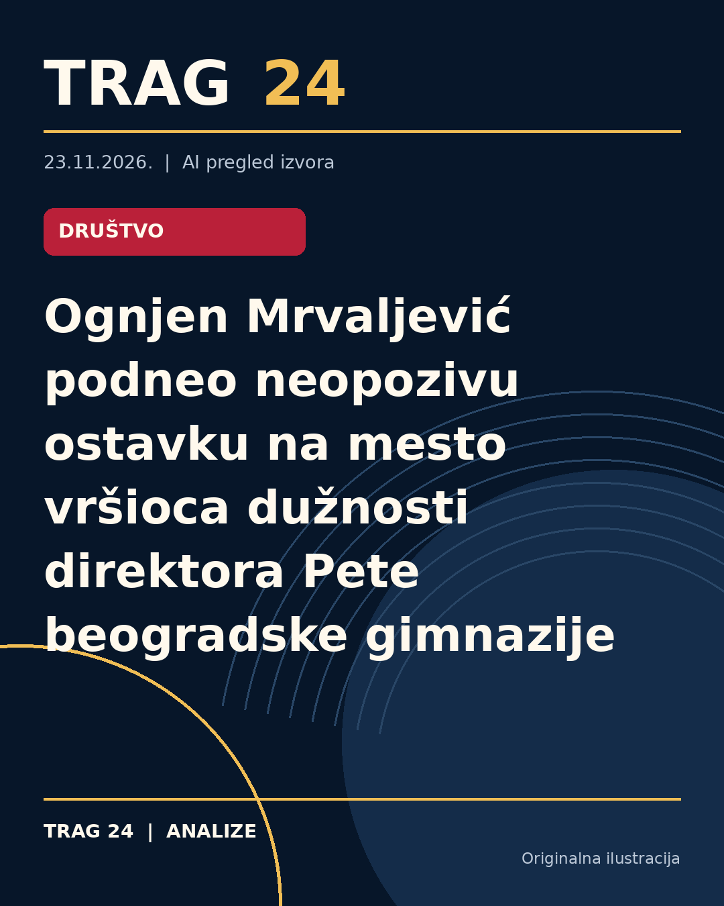

Ognjen Mrvaljević podneo neopozivu ostavku na mesto vršioca dužnosti direktora Pete beogradske gimnazije

ŠTA SE DOGODILO
Ognjen Mrvaljević, vršilac dužnosti direktora Pete beogradske gimnazije u Beogradu, podneo je neopozivu ostavku na tu funkciju. Ovaj događaj nastaje u kontekstu dužeg perioda nesuglasica unutar škole, uključujući i protivljenje delu roditelja i nastavničkog kolektiva njegovom imenovanju.
HRONOLOGIJA
Mrvaljević je imenovan za vršioca dužnosti direktora februara ove godine, nakon što je istekao mandat tadašnje direktorke Danke Nešović. Njegov dolazak naišao je na negodovanje roditelja i nastavnika, koji su smatrali da konkursna procedura nije bila zakonita i da nema podršku većine kolektiva. Tokom mandata pod njegovim vođstvom došlo je do suspenzija nastavnika, što je dodatno produbilo krizu u školi. Ostavku je Mrvaljević obavestio zaposlenima preko mejla, u kome je naveo da očekuje poništenje konkursa za direktora od strane Ministarstva prosvete. Takođe su ostavke podnela i tri pomoćnika direktora.
ŠTA NAVODE IZVORI
Prema izvorima, uključujući izjavu advokata Gorana Cvetkovića, Mrvaljević tvrdi da konkursna dokumentacija za izbor direktora nije imala nedostataka, ali da očekuje da će ministar prosvete, pod pritiscima i ucenama, doneti odluku o poništenju konkursa. Izvor blizak školi navodi da su se protivljenja odnosila na legitimitet izbora i podršku nastavnog kolektiva. Savet roditelja je zahtevao preispitivanje imenovanja. Navodi se i da postoji atmosfera pritisaka i javnih pretnji krivičnim prijavama.
ŠTA JE POTVRĐENO
Potvrđeno je da je Ognjen Mrvaljević podneo neopozivu ostavku na mesto vršioca dužnosti direktora Pete beogradske gimnazije. Takođe, potvrđeno je da su ostavke podneli i njegovi pomoćnici. Ima potvrdu da je Mrvaljević na mesto v.d. direktora postavljen nakon isteka mandata prethodne direktorke i da je njegov izbor izazvao neslaganja među roditeljima i zaposlenima. Sporazumno je i da je putem mejla informisao kolektiv o svojoj odluci.
ŠTA NIJE POTVRĐENO
Nije potvrđeno da li će ministarstvo prosvete poništiti konkurs za direktora Pete gimnazije, niti kada će se to eventualno desiti. Takođe, nisu dostupni detalji o tome da li će Mrvaljević ili bilo ko drugi biti zvanično izložen krivičnim prijavama vezanim za konkurs ili rad škole. Takođe nisu potvrđene eventualne dalje posledice ove ostavke po upravljanje školom.
ŠTA OSTАJE OTVORENO: Ostaje neizvesno kako će Ministarstvo prosvete reagovati na ostavku i da li će poništiti konkurs za izbor direktora. Ostaje otvoreno pitanje ko će privremeno ili trajno preuzeti rukovođenje školom i na koji način će se rešiti postojeće napetosti u kolektivu i među roditeljima. Takođe, postoje nejasnoće koliko će trajati kriza u školi i da li će se pokrenuti bilo kakvi postupci u vezi sa navodnim pritiscima i pretnjama pomenutim u saopštenju Mrvaljevića.
Izvori
- https://www.euronews.rs/srbija/drustvo/253375/ognjen-mrvaljevic-podneo-neopozivu-ostavku-u-petoj-gimnaziji/vest
- https://www.b92.net/info/drustvo/287557/direktor-pete-beogradske-gimnazije-ognjen-mrvaljevic-podneo-ostavku/vest
- https://vreme.com/drustvo/ognjen-mrvaljevic-ostavka-peta-beogradska-gimnazija/
Ova analiza je pripremljena uz pomoć veštačke inteligencije na osnovu javno dostupnih izvora. Navodi izvora nisu nužno nezavisno potvrđeni.